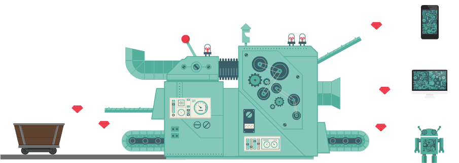

Code
# Import the pandas library for data manipulation
import pandas as pd
# Read the CSV file 'data/Book3.csv' into a pandas DataFrame
data=pd.read_csv('data/Book3.csv')
# Display the DataFrame
data| a | b | |
|---|---|---|
| 0 | 1241 | rhth |
| 1 | 35235 | rjyyj |
Tony Duan
This section covers how to read data from various sources and write data to different formats in Python.

Data input is the process of reading data from external sources into your Python program. This section covers common file formats and methods for reading data.
sheet_name=0 read first sheet.
sheet_name=1 read second sheet.
.sheet_name=‘Sheet1’ read ‘Sheet1’ sheet.
Parquet format is one of the best for data analytics.
(100, 62)| FlightDate | Airline | Origin | Dest | Cancelled | Diverted | CRSDepTime | DepTime | DepDelayMinutes | DepDelay | ... | WheelsOn | TaxiIn | CRSArrTime | ArrDelay | ArrDel15 | ArrivalDelayGroups | ArrTimeBlk | DistanceGroup | DivAirportLandings | __index_level_0__ | |
|---|---|---|---|---|---|---|---|---|---|---|---|---|---|---|---|---|---|---|---|---|---|
| 0 | 2022-04-04 00:00:00+00:00 | Commutair Aka Champlain Enterprises, Inc. | GJT | DEN | False | False | 1133 | 1123.0 | 0.0 | -10.0 | ... | 1220.0 | 8.0 | 1245 | -17.0 | 0.0 | -2.0 | 1200-1259 | 1 | 0 | 0 |
| 1 | 2022-04-04 00:00:00+00:00 | Commutair Aka Champlain Enterprises, Inc. | HRL | IAH | False | False | 732 | 728.0 | 0.0 | -4.0 | ... | 839.0 | 9.0 | 849 | -1.0 | 0.0 | -1.0 | 0800-0859 | 2 | 0 | 1 |
| 2 | 2022-04-04 00:00:00+00:00 | Commutair Aka Champlain Enterprises, Inc. | DRO | DEN | False | False | 1529 | 1514.0 | 0.0 | -15.0 | ... | 1622.0 | 14.0 | 1639 | -3.0 | 0.0 | -1.0 | 1600-1659 | 2 | 0 | 2 |
| 3 | 2022-04-04 00:00:00+00:00 | Commutair Aka Champlain Enterprises, Inc. | IAH | GPT | False | False | 1435 | 1430.0 | 0.0 | -5.0 | ... | 1543.0 | 4.0 | 1605 | -18.0 | 0.0 | -2.0 | 1600-1659 | 2 | 0 | 3 |
| 4 | 2022-04-04 00:00:00+00:00 | Commutair Aka Champlain Enterprises, Inc. | DRO | DEN | False | False | 1135 | 1135.0 | 0.0 | 0.0 | ... | 1243.0 | 8.0 | 1245 | 6.0 | 0.0 | 0.0 | 1200-1259 | 2 | 0 | 4 |
5 rows × 62 columns
Read gzipped Parquet
| FlightDate | Airline | Origin | Dest | Cancelled | Diverted | CRSDepTime | DepTime | DepDelayMinutes | DepDelay | ... | WheelsOn | TaxiIn | CRSArrTime | ArrDelay | ArrDel15 | ArrivalDelayGroups | ArrTimeBlk | DistanceGroup | DivAirportLandings | __index_level_0__ | |
|---|---|---|---|---|---|---|---|---|---|---|---|---|---|---|---|---|---|---|---|---|---|
| 0 | 2022-04-04 00:00:00+00:00 | Commutair Aka Champlain Enterprises, Inc. | GJT | DEN | False | False | 1133 | 1123.0 | 0.0 | -10.0 | ... | 1220.0 | 8.0 | 1245 | -17.0 | 0.0 | -2.0 | 1200-1259 | 1 | 0 | 0 |
| 1 | 2022-04-04 00:00:00+00:00 | Commutair Aka Champlain Enterprises, Inc. | HRL | IAH | False | False | 732 | 728.0 | 0.0 | -4.0 | ... | 839.0 | 9.0 | 849 | -1.0 | 0.0 | -1.0 | 0800-0859 | 2 | 0 | 1 |
| 2 | 2022-04-04 00:00:00+00:00 | Commutair Aka Champlain Enterprises, Inc. | DRO | DEN | False | False | 1529 | 1514.0 | 0.0 | -15.0 | ... | 1622.0 | 14.0 | 1639 | -3.0 | 0.0 | -1.0 | 1600-1659 | 2 | 0 | 2 |
| 3 | 2022-04-04 00:00:00+00:00 | Commutair Aka Champlain Enterprises, Inc. | IAH | GPT | False | False | 1435 | 1430.0 | 0.0 | -5.0 | ... | 1543.0 | 4.0 | 1605 | -18.0 | 0.0 | -2.0 | 1600-1659 | 2 | 0 | 3 |
| 4 | 2022-04-04 00:00:00+00:00 | Commutair Aka Champlain Enterprises, Inc. | DRO | DEN | False | False | 1135 | 1135.0 | 0.0 | 0.0 | ... | 1243.0 | 8.0 | 1245 | 6.0 | 0.0 | 0.0 | 1200-1259 | 2 | 0 | 4 |
5 rows × 62 columns
Data output involves writing data from your Python program to external files. This section demonstrates how to save data in various formats.
Output to zip format
Testing
Testing, Testing.
Testing
https://medium.com/@gadhvirushiraj/the-best-file-format-for-data-science-ed756f937be8
---
title: "Input & Output in Python"
author: "Tony Duan"
execute:
warning: false
error: false
format:
html:
toc: true
toc-location: right
code-fold: show
code-tools: true
number-sections: true
code-block-bg: true
code-block-border-left: "#31BAE9"
---
# Data Input and Output in Python
This section covers how to read data from various sources and write data to different formats in Python.
{width="500"}
# Input
Data input is the process of reading data from external sources into your Python program. This section covers common file formats and methods for reading data.
## Read CSV
```{python}
# Import the pandas library for data manipulation
import pandas as pd
# Read the CSV file 'data/Book3.csv' into a pandas DataFrame
data=pd.read_csv('data/Book3.csv')
# Display the DataFrame
data
```
## Read CSV Online
```{python}
#| eval: false
# Import the pandas library
import pandas as pd
# Define the URL of the CSV file
url='https://raw.githubusercontent.com/rfordatascience/tidytuesday/master/data/2020/2020-02-11/hotels.csv'
# Read the CSV file from the URL into a pandas DataFrame
hotels=pd.read_csv(url)
```
## Read Excel
sheet_name=0 read first sheet.
sheet_name=1 read second sheet.
.sheet_name='Sheet1' read 'Sheet1' sheet.
```{python}
# Import the pandas library
import pandas as pd
# Read the Excel file 'data/Book1.xlsx' into a pandas DataFrame, specifying the first sheet (index 0)
data_excel=pd.read_excel('data/Book1.xlsx',sheet_name=0)
# Display the DataFrame
data_excel
```
## Read Parquet
Parquet format is one of the best for data analytics.
```{python}
# Import the pandas library
import pandas as pd
# Read the parquet file 'data/df.parquet' into a pandas DataFrame
data= pd.read_parquet("data/df.parquet")
# Print the shape of the DataFrame (number of rows, number of columns)
data.shape
```
```{python}
# Display the first 5 rows of the DataFrame
data.head()
```
Read gzipped Parquet
```{python}
# Import the pandas library
import pandas as pd
# Read the gzipped parquet file 'data/df.parquet.gzip' into a pandas DataFrame
data= pd.read_parquet("data/df.parquet.gzip")
# Print the shape of the DataFrame
data.shape
```
## Read Feather
```{python}
# Import the pandas library
import pandas as pd
# Read the feather file 'data/feather_file.feather' into a pandas DataFrame
data=pd.read_feather("data/feather_file.feather")
# Display the first 5 rows of the DataFrame
data.head()
```
## Text Files
```{python}
# Open the file 'txt_example.txt' in read mode
f = open("txt_example.txt", "r")
# Read the entire content of the file into variable a
a=f.read()
# Print the content
print(a)
```
# Output
Data output involves writing data from your Python program to external files. This section demonstrates how to save data in various formats.
## Write CSV
```{python}
# Write the first 5 rows of the DataFrame to a CSV file named 'data/out.csv', without including the index
data.head().to_csv('data/out.csv', index=False)
```
## Write Excel
```{python}
# Write the data_excel DataFrame to an Excel file named 'data/out.xlsx'
data_excel.to_excel('data/out.xlsx')
```
## Write Parquet
```{python}
# Write the first 100 rows of the DataFrame to a parquet file named 'data/df.parquet'
data.head(100).to_parquet('data/df.parquet')
```
Output to zip format
```{python}
# Write the first 100 rows of the DataFrame to a gzipped parquet file named 'data/df.parquet.gzip'
data.head(100).to_parquet('data/df.parquet.gzip',
compression='gzip')
```
## Write Feather
```{python}
# Write the first 100 rows of the DataFrame to a feather file named 'data/feather_file.feather'
data.head(100).to_feather("data/feather_file.feather")
```
## Write Text File
```{python}
# Define a multi-line string
a_txt='''
Testing
Testing, Testing.
Testing
'''
# Print the string
print(a_txt)
```
```{python}
# Open the file 'myfile.txt' in write mode
f = open("myfile.txt", "w")
# Write the content of a_txt to the file
f.write(a_txt)
# Close the file
f.close()
```
# Reference
https://medium.com/@gadhvirushiraj/the-best-file-format-for-data-science-ed756f937be8